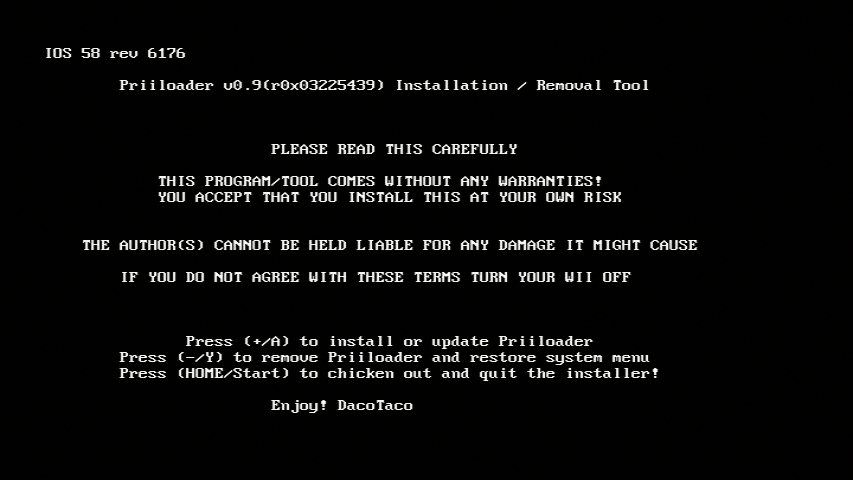

Priiloader
Eğer bu öğreticiye bağlı herhangi bir yardıma ihtiyacınız olursa lütfen RiiConnect24’ün Discord sunucusuna katılın (tavsiye edilen) ya da [email protected] üzerinden mail atın.
Priiloader, Wii Menü’den daha önce açılabildiği için Wii’nizi brick modundan korumanızda büyük kolaylık sağlar. Wii’nizi brick modundan korumanızda büyük kolaylık sağlar. Ayrıca bu araç, Wii Menünüz için hackleri etkinleştirebilir ve Homebrew Channel, BootMii veya istediğiniz herhangi bir homebrew uygulamasını hızlı bir şekilde başlatmak için kullanılabilir!

Priiloader’ı sakın vWii’nize (Wii U’nun Wii modu) yüklemeyin. Bunu yapmak vWii’yi brick moduna sokar.
İhtiyacınız olan şeyler
- SD Kart veya USB sürücü
- Priiloader Yükleyici
Talimatlar
Bölüm I - İndirme/Yükleme
- Download the Priiloader installer and extract it to the root of your SD card or USB drive.
Bölüm II - Priiloader’ı Yüklemek
- Wii’nizde bulunan Homebrew Channel’ı başlatın.
- Priiloader Yükleyici’yi başlatın.
- Wii Kumandanızın + tuşuna ya da GameCube Kumandanızın A tuşuna basın. 

Bölüm III - Priiloader Girişi/Yapılandırması
- Wii’nizi açarken RESET tuşuna basılı tutun.
- Eğer Wii mini kullanıyorsanız, konsola USB klavyenizi bağlayıp ESC tuşuna basılı tutun.


- Priiloader menüsünü görmüş olmanız gerekir.

System Menu Hackskısmına gidin.
Eğer Priiloader’ı yüklemek için USB sürücü kullanıyorsanız, konsola herhangi bir SD Kartın USB sürücüyle aynı zamanda takılı olmadığına dikkat edin. Öbür türlü Priiloader, hacks_hash.ini dosyasını bulamaz.
- Müteaakip Hackleri açmanızı tavsiye ederiz:
Region Free EVERYTHING,Block Disc UpdatesandBlock Online Updates.
save settingskısmına gidip önce A tuşuna ardından Priiloader menüsüne dönmek için B tuşuna basmanızı tavsiye ederiz.Homebrew Channelkısmına gidip A tuşuna basarak başlatın.
Sistem Menüsü Hackleri Listesi
Bu, Priiloader ile etkinleştirebileceğiniz hacklerin listesidir.
| Hack | Açıklama |
|---|---|
| Block Disc Updates | '’Wii Sistem Güncellemesi’’ ekranını ve bazı oyunların açılabilmesi için yapılan sistem güncellemesi zorlamasını kaldırır. |
| Block Online Updates | Wii’nizi güncellemeyi devre dışı bırakır. Güncellemeler, 32007 hata koduyla başarısız olur. |
| Auto-Press A at Health Screen | Başta açılan ‘‘Sağlık ve Güvenlik’’ ekranını otomatik olarak A’ya basarak geçer. |
| Replace Health Screen with Backmenu | '’Sağlık ve Güvenlik’’ ekranını, Wii Menü’ye geri dönerken açılan animasyonla değiştirir. |
| Move Disc Channel | Disc Channel’ı, Wii Menü’nün herhangi bir yerine taşıyabilmenize olanak sağlar. Normalde, ilk sol üst kısmından başka bir yere hareket ettirilemez. |
| Wiimmfi Patch v4 | Disc Channel’da bulunan bütün oyunlar, Wiimmfi ile çalışabilmesi için otomatik olarak yamalanır. |
| 480p graphics fix in system menu | Wii Menü’deki 480p ile alakalı küçük bir sorunu giderir. |
| Remove NoCopy Save File Protection | Normalde kopyalanması izin verilmeyen kayıt dosyalarını, Data Yönetimi’nden SD Kartınıza kopyalayabilmenizi sağlar. |
| Region Free EVERYTHING | Yüklü olanlar da dahil bütün Wii uygulamalarının bölge kilidini kaldırır. |
| Region Free GC Games (No VM Patch) | GameCube disklerinin bölge kilidini kaldırır. |
| Region Free Wii Games | Wii disklerinin bölge kilidini kaldırır. |
| Region Free Channels | Yüklü kanalların bölge kilidini kaldırır. |
| No System Menu Sounds AT ALL | Wii Menü’nün ses efektlerini devre dışı bırakır. |
| No System Menu Background Music | Wii Menü’nün arkaplan müziğini devre dışı bırakır. |
| Re-Enable Bannerbomb v2 | Güncel Wii sürümünde, “Bannerbomb” exploitini etkinleştirir. Homebrew Channel, zaten yüklüyse buna gerek yoktur. |
| OSReport to UsbGecko(slot B) | Wii Menü girdilerini, hafıza kartı yuva B’deki hata ayıklama cihazına gönderir. |
| OSReport to UsbGecko(GeckoOS,B) | Eğer Wii Menü Gecko OS tarafından başlatıldıysa, Wii Menü girdilerini, hafıza kartı yuva B’deki hata ayıklama cihazına gönderir. |
| Force Standard Recovery Mode | Konsol otomatik olarak kurtarma modunda başlatılır. Kullanıcıların Wii sistemlerini brick modundan çıkarabilmeleri için kurtarma disklerini başlatabilmelerini sağlar. |
| Remove Diagnostic Disc Check | Eklenen oyunun, “Wii Başlangıç Diski”nin başlık kimliğiyle eşleşip eşleşmediğini görmek için yapılan Wii denetimini kaldırır. |
| Lock System Menu with Black Screen | Wii Menünüzü siyah ekran olarak yüklemenizi ve böylece kullanamamanızı sağlar. (Bunu etkinleştirmeyin) |
| No-Delete HAXX,JODI,DVDX,DISC,DISK,RZDx | Bu başlık kimliklerine sahip kanalları yeniden etkinleştirin (orijinal olarak sistem güncellemeleriyle exploit olduklarından bloke edildiler). |
| Force Disc Games to run under IOS249 | Disklerin, oyun IOS’u olarak cIOS 249’u kullanmasını sağlar. Burnlenen oyunların tek başına oynatılmasına izin veremese de, burnlenen diskleri oynatıyor olması gerekir. (Burnlenmemiş oyun, 002 hata kodunu verir) |
Continue to the Dos and Don’ts of Wii Modding
These are some guidelines to ensure you don’t brick your Wii.